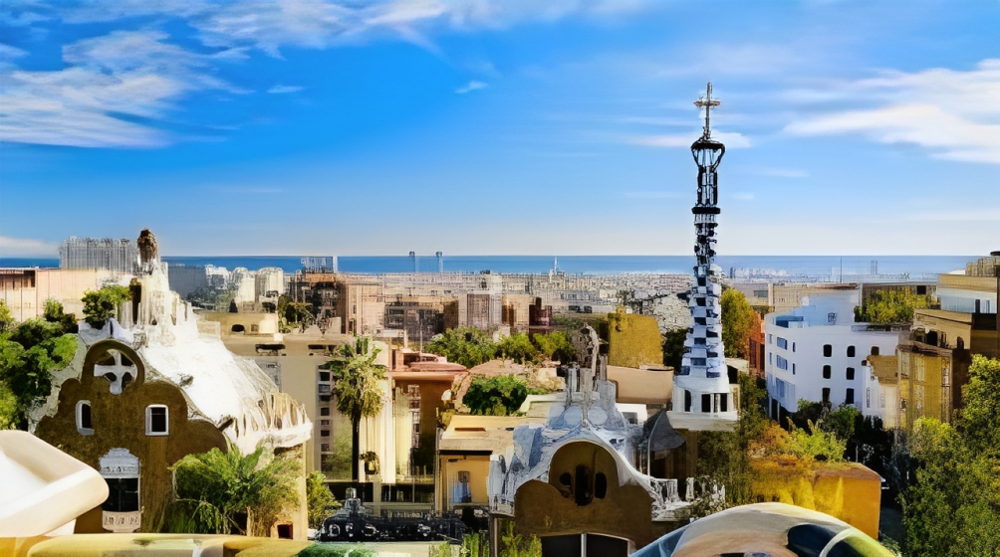
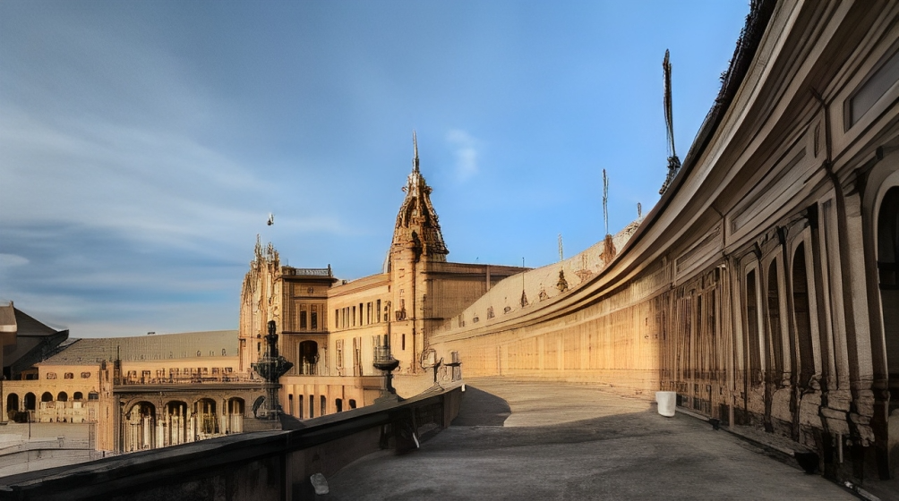

Synopsis
Let us discover more in
Barcelona, Granada, Seville!
 |
Barcelona, a vibrant city in Catalonia, Spain, is a captivating blend of avant-garde architecture, rich history, and a lively cultural scene. Home to iconic landmarks like Antoni Gaudí's Sagrada Familia and Park Güell, Barcelona's streets are alive with art, music, and the lively energy of its residents. The bustling La Rambla, the Gothic Quarter, and the historic Barri Gòtic contribute to the city's unique charm. |
Granada, nestled in the Andalusian region, is a treasure trove of Moorish influence and breathtaking landscapes. The crown jewel is the Alhambra, a stunning palace and fortress complex with intricate Islamic architecture. The city's narrow winding streets lead to charming plazas where traditional tapas bars and Flamenco performances showcase the passionate Andalusian culture. Granada's fusion of history, art, and hospitality makes it a captivating destination. |
|
 |
Seville, the capital of the Andalusian region in southern Spain, is a city of enchanting beauty and rich cultural heritage. Known for its Moorish architecture, Seville is home to the stunning Alcázar palace complex with its intricate tilework and lush gardens. The iconic Giralda tower, originally a minaret, offers panoramic views of the city. The historic Barrio Santa Cruz, with its narrow streets and vibrant squares, captures the essence of Seville's charm. |